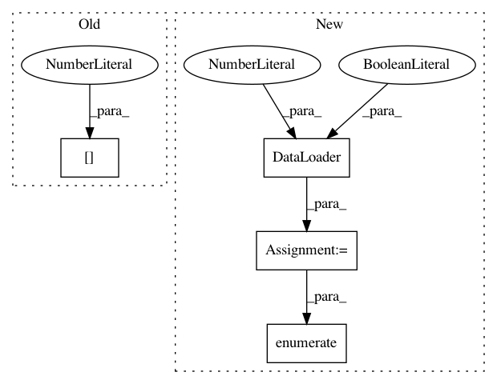

3e11eb52b9b370bf9df6bf396e91ef94bf4055b8,examples/mnist_superpixel_75.py,,,#,6
Before Change
print(input.size())
print(len(adj))
print(len(position))
print(adj[0].size())
After Change
path, train=False, transform=Compose([Graclus(2), PolarAdj()]))
train_loader = DataLoader(train_dataset, batch_size=100, shuffle=True)
test_loader = DataLoader(test_dataset, batch_size=128, shuffle=True)
for batch, ((input, adj, position), target) in enumerate(test_loader):
print(batch)
// print(len(target))
// print(input.size())
In pattern: SUPERPATTERN
Frequency: 3
Non-data size: 4
Instances
Project Name: rusty1s/pytorch_geometric
Commit Name: 3e11eb52b9b370bf9df6bf396e91ef94bf4055b8
Time: 2017-11-02
Author: matthias.fey@tu-dortmund.de
File Name: examples/mnist_superpixel_75.py
Class Name:
Method Name:
Project Name: pyprob/pyprob
Commit Name: 62b9b6ffdcba80685b7374b5d0e46d2c05873be7
Time: 2018-12-04
Author: atilimgunes.baydin@gmail.com
File Name: pyprob/nn/inference_network.py
Class Name: InferenceNetwork
Method Name: optimize
Project Name: pyprob/pyprob
Commit Name: 62b9b6ffdcba80685b7374b5d0e46d2c05873be7
Time: 2018-12-04
Author: atilimgunes.baydin@gmail.com
File Name: pyprob/nn/inference_network.py
Class Name: InferenceNetwork
Method Name: _pre_generate_layers